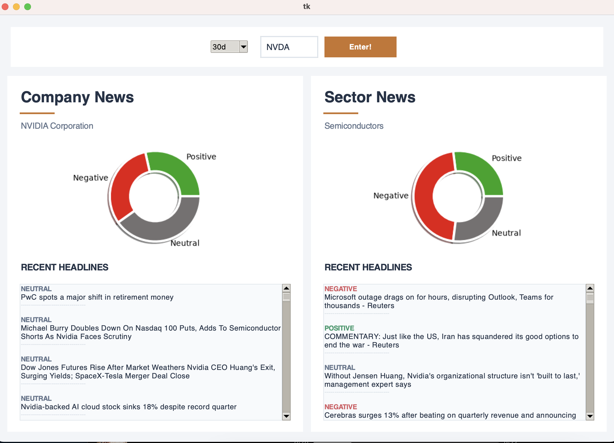
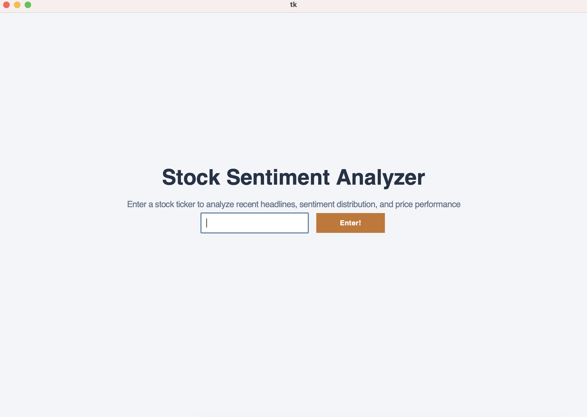

PYTHON APPLICATION
Stock Sentiment Analyzer
Application which allows a user to look at recent news regarding a company and it's respective sector.

Project Overview
This is a tool that takes in a relational table as a .csv file, a list of its functional dependencies, and a primary key. With that, it will determine which normal form the table already exists in, and can then normalize that table to whatever form the user desires, up to Boyce-Codd normal form.
Key Features
- Modern, readable graphical interface
- Ability to search across a 30, 60, or 90 day time span
- Detailed list of all relevant headlines

Technical Implementation
The application GUI is built using the tkinter python library, with the chart objects using Matplotlib. The company news feed articles come from the finnhub api, with the sector wide news being gathered from the google news RSS feed.
The sentiment detection is done using the Valence Aware Dictionary and sEntiment Reasoner (VADER) library.
Interested in the code?
Explore the implementation on GitHub.